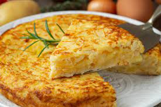

Tortilla recipe

This is not only also one of my boyfriends fav recipes, but his recipe, and its amazing
This spanish tortilla is easy to make, but it can be tricky, and it's a delicious dish for lunch or dinner
Ingredients:
- 3 medium sized potatoes
- salt and pepper
- 3 eggs
- frying oil
Steps
- First you have to peel and cut the potatoes in small-ish cubes.
While you do that you can put a pan on medium heat and heat your oil to fry the potatoes
- When all your potatoes are cut and peeled you have to fry them in a few patches until they are golden
- Once all your potatoes are done, you have to beat the eggs, add salt and pepper and then add that to the fried potatoes
- At this point you need a pan, the same you used before if you want, with a thin layer of oil covering all of it in medium heat.
Then you have to add you mixture of potatoes and egg
- Let it cook until it moves freely when you shake the pan and doesn't stick to it.
Now comes the tricky part, take the pan, cover it with a plate bigger than the pan itself and turn it around quickly so the tortilla is on the plate.
Then you want to put the half-cooked tortilla back on the pan sliding it off the plate into the pan again
- Let the tortilla cook at least until it slides in the pan when u shake it.
Depending on how you like it, you can cook it for longer or not, resulting in a runny centre or a more stiff cooked one
- To finish, just slide it off the pan into the plate, cut in slices like a cake or a pizza and enjoy with anyone you want (or save for later, its also good cold)